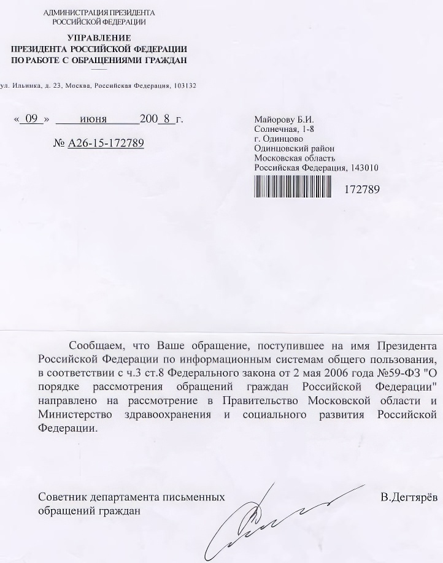
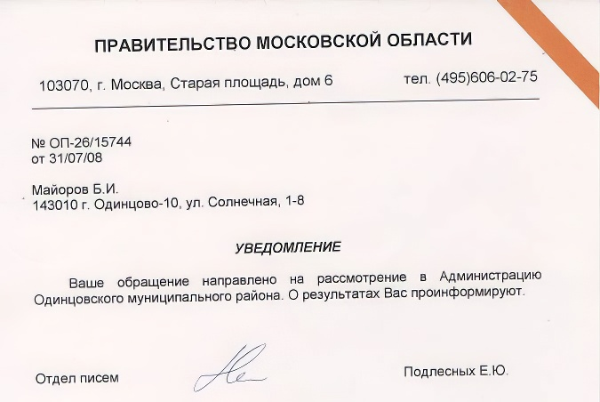
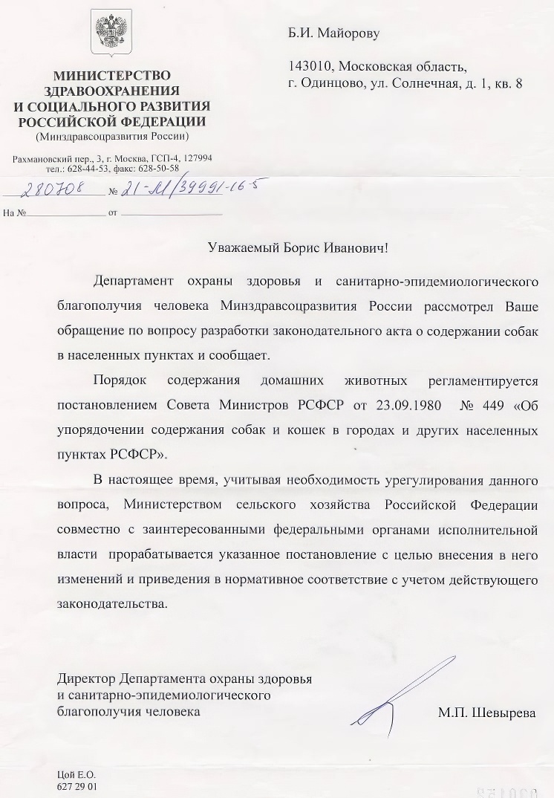
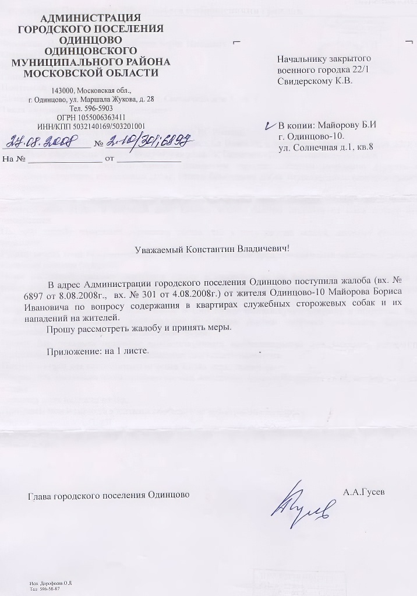
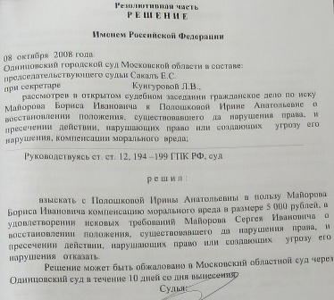
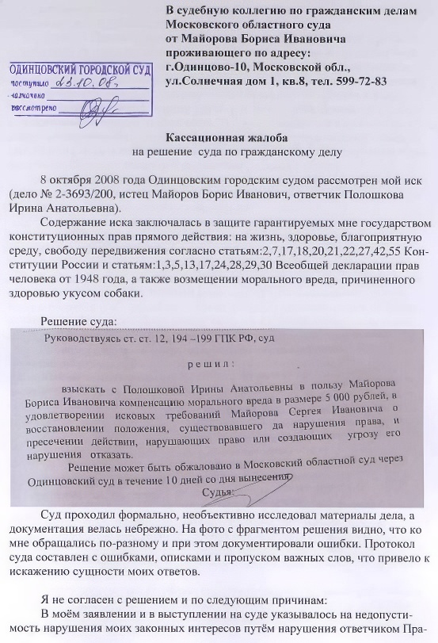

Не получив защиты от системы управления, я обратился к Президент.
Открытое письмо Президенту Российской Федерации
О собаках опасных пород
Товарищ Верховный Главнокомандующий.
Уважаемый Дмитрий Анатольевич.
Я офицер запаса РВСН, и моя семья проживает на Власихе, в закрытом военном городке 22/1 в служебной квартире.
Городок охраняется, а православная община при Храме Илии Муромца разъясняет православные каноны о недопустимости содержания собак в доме.
Однако с молчаливого согласия начальника гарнизона в служебных квартирах жители начали содержать не только «комнатных», но и сторожевых собак. И как результат - много больших брошенных собак гуляет по городку по улицам, возле садов и школ.
22 мая с.г. два ротвейлера из соседней квартиры случайно выбежали из квартиры и, что естественно для собак такой породы, напали на меня; в результате борьбы с животными в настоящее время лечу укусы и нервный шок. В этот раз хозяйка сумела отогнать собаку без намордника, и я остался в живых.
На мою письменную жалобу начальник гарнизона составляет ответ, а по телефону ответил мне, что у него другие задачи и для защиты моей семьи ему нужны дополнительные полномочия или политическое решение руководства.
Физический и моральный вред, причиняемый населению городка в результате нерегулируемой свободы и любви к животным, возрастает.
Хотелось бы, чтобы национальная программа охраны здоровья устранила опасность, связанную с животными и ввела порядок содержания собак опасных пород, установив соответствующие ограничения на их приобретение.
По моим косвенным исследованиям через интернет, несмотря на ограничения, идёт накопление оружия и через покупку в соответствующих магазинах, и через нелегальные каналы, в том числе и для защиты от собак..
Уже сегодня много опасных собак и миллионы стволов в квартирах и их рост не приведёт к благосостоянию народа, а чреват серьёзными конфликтами.
Прошу Вас ускорить принятие соответствующего законодательства и незамедлительно запретить содержание сторожевых собак в служебных квартирах нашего городка.
Другие проблемы собраны мной на веб-странице rvsn2.pdf.
Борис Иванович Майоров
3 0 мая 2008г.


Защитник прав человека дал совет конкретнее http://www.ombudsmanmo.ru/forum/forum1/topic21/message36/#message36 .


В ожидании реакции вертикали власти, я запросил защиты у суда, но и суд, признав ответчика виновным, компенсировал мне только укус деньгами, сохранив опасную ситуацию в доме по ул.Солнечная, в упор изменив моё имя..

Что бы это значило - всё-таки власть? Идти менять паспорт и соглашаться на бесправную собачью жизнь, на которую обречены россияне.
Человека эксплуатируют, кусают, взрывают, сжигают, калечат за копейки, а качественные услуги в области образования, здравоохранения и жилья стоят дорого. Надо приводить цену человеческой жизни хотя бы к цене среднего автомобиля. А то помятый бампер стоит дороже укушенного предплечья.
"Российская газета" - Неделя №3746 от 15апреля 2005г.
"РГ" попыталась выяснить, сколько стоит в России человеческая жизнь, есть ли какие-либо формулы, по которым производится расчет выплат пострадавшим. И столкнулась с удивительной вещью: получается, что жизнь человека стоит ровно столько, сколько на нее выделят чиновники из бюджета.
Попытался найти справедливости в Совете Федерации...
Посоветовался со знакомым адвокатом и написал кассационную жалобу. В России тяжёлая бюрократическая система "кошмарит" бизнес и гоняет граждан по коридорам своей системы. Пока не завою как пёс попытаюсь пройтись по вертикалям и горизонталям всех ветвей государственного управления..

Сегодня 24.10.08 поговорил по телефону с начальником гарнизона Свидерским К.В.
Ему некогда разбираться с жильцами дома и моими просьбами - на нём весь ГАРНИЗОН РВСН.
Но он обещал посмотреть куда-то и может быть найти что-то, но ответил как-то неуверенно.
Моя семья, жители нашего дома продолжают ждать законности ...
Повторное обращение к Президенту.
Товарищ Верховный Главнокомандующий.Уважаемый Дмитрий Анатольевич.
Я офицер запаса РВСН, продолжаю трудиться, преподаю компьютерные технологии. Моя семья проживает на Власихе, в закрытом военном городке 22/1 в служебной квартире.
Я писал Вам, что городок охраняется, а православная община при Храме Илии Муромца разъясняет православные каноны о недопустимости содержания собак в доме.
Однако с молчаливого согласия начальника гарнизона в служебных квартирах жители начали содержать не только «комнатных», но и сторожевых собак. И как результат - много больших брошенных собак гуляет по городку по улицам, возле садов и школ.
22 мая с.г. два ротвейлера из соседней квартиры случайно выбежали из квартиры и, что естественно для собак такой породы, напали на меня; в результате борьбы с животными в настоящее время лечу укусы и нервный шок.
До сегодняшнего дня на мою письменную жалобу и на Ваш запрос начальник гарнизона составляет ответ, а по телефону отвечает мне, что у него другие задачи и для защиты моей семьи ему нужны дополнительные полномочия.
Я уже на пределе своего терпения. Начал публикацию переписки с органами управления страной на своём сайте - avn/p_p.htm.
Прошу Вас помочь мне получить какой-то определённый ответ на мою жалобу.
25.10.200.
Странно, вертикаль власти налицо, а результатов управления нет.К тому же степень доверия граждан к суду остается невысокой, заявил президент России Дмитрий Медведев, выступая в декабре 2008г. на VII Всероссийском съезде судей.
И я с ним согласен. Мне не верится, например, что после захвата ротвейлером предплечья судьи, она могла бы удовлетвориться 5000 рублями компенсации затрат на лечение гематом и продолжать ходить возле конуры, как бы уважая право на частную собственность в виде двух сторожевых собак своей соседки.
Продолжение следует...